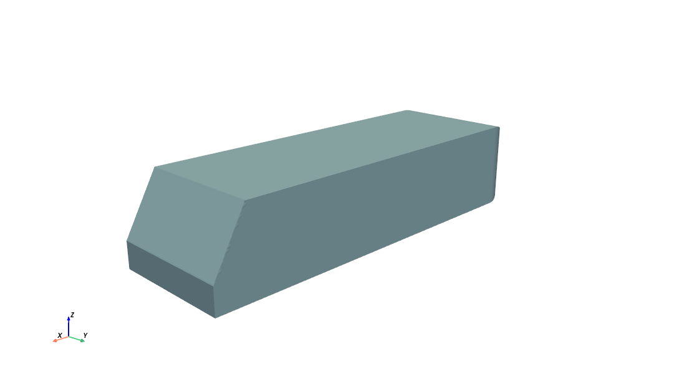
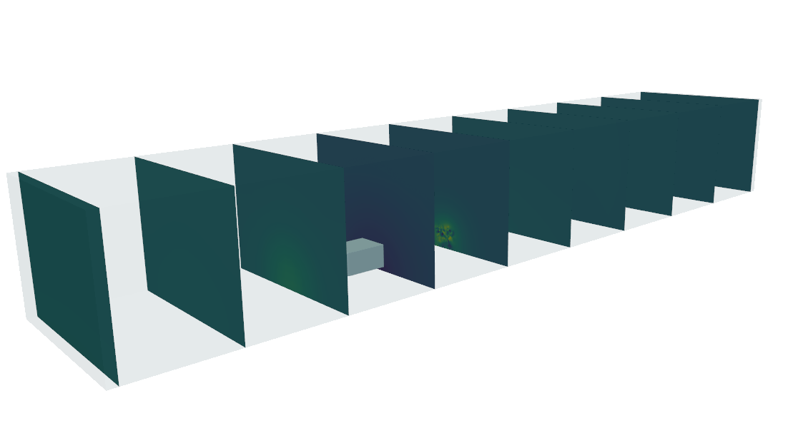

Slice Prediction Tutorial¶
This tutorial demonstrates how to run the Slice prediction pipeline on the publicly available WindsorML Dataset, which contains computational fluid dynamics (CFD) simulations for a vehicle geometry.
Slice Prediction is used to predict parameters from slices for 3D geometry meshes. A slice is a 2D cross-sectional plane cut through the 3D geometry and volume that captures parametrics stored as an image file. In computational fluid dynamics (CFD), common parametrics include velocity and pressure.
For example, given a 3D geometry like this Ahmed body:
{kind=link}
The Slice Prediction model can predict 2D slice images showing the fluid flow parameters, like this slice visualizing pressure:
{kind=link}
The tutorial is divided into three parts:
First, we’ll download the data secessary for Slice prediction.
Second, we train a Slice prediction model on the WindsorML Dataset, including data preparation, model training, and evaluating the trained model’s performance.
Third, we use the trained model to predict slices for new, unseen geometries without ground truth simulation data.
By following these tutorials, you’ll learn how to:
Access the subset of data required for this use case
Create data manifests for the WindsorML dataset
Configure and run the Slice prediction pipeline for training and prediction
Interpret the training and prediction results, including images and metrics
Apply the trained model to predict slices for new geometries
For more detailed information on the Slice Prediction use case, including how to build a model, configuration options, and advanced topics, refer to the Model User Guide – Slice Prediction documentation.
Let’s get started.